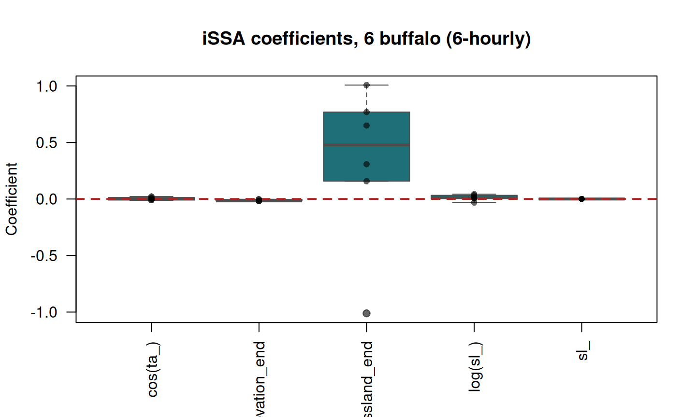

Exercise 8 — Step selection and iSSA
Class 8 · Theme 5
Goals. Generate random steps and look inside a stratum; fit an SSF; add movement terms for a full iSSA; update and interpret the movement kernel; add a habitat × movement interaction; discover why covariate resolution decides whether any of this works; and fit all six animals.
Time: ~55 minutes. Packages: amt, terra, survival, dplyr, tidyr, lubridate.
Setup
clean <- read.csv("data/buffalo_kruger.csv.gz") |>
transmute(id = individual.local.identifier,
t = as.POSIXct(timestamp, tz = "UTC"),
x = location.long, y = location.lat) |>
filter(!is.na(x), !is.na(y)) |>
distinct(id, t, .keep_all = TRUE)
trk <- make_track(clean, x, y, t, id = id, crs = 4326) |>
transform_coords(crs_to = 32736)
covs <- project(
c(rast("data/kruger_elevation.tif"), rast("data/kruger_landcover.tif")),
"EPSG:32736"
)
names(covs)
#> [1] "elevation" "trees" "grassland" "shrubs" "cropland"
round(res(covs))
#> [1] 893 893Note the pixel size: 893 m. Remember that number — it decides the outcome of this entire exercise.
Task 1 — Build the strata
steps_for <- function(animal, rate = hours(1), tolerance = minutes(15)) {
trk |>
filter(id == animal) |>
track_resample(rate = rate, tolerance = tolerance) |>
filter_min_n_burst(min_n = 3) |>
steps_by_burst() |>
filter(sl_ < 10000) # drop the spatial outliers found in Class 3
}
set.seed(2026)
obs <- steps_for("Cilla")
ssf_dat <- obs |>
random_steps(n_control = 15) |>
extract_covariates(covs, where = "both")
c(strata = n_distinct(ssf_dat$step_id_), rows = nrow(ssf_dat))
#> strata rows
#> 3512 56192
names(ssf_dat)
#> [1] "burst_" "x1_" "x2_" "y1_"
#> [5] "y2_" "sl_" "ta_" "t1_"
#> [9] "t2_" "dt_" "case_" "step_id_"
#> [13] "elevation_start" "trees_start" "grassland_start" "shrubs_start"
#> [17] "cropland_start" "elevation_end" "trees_end" "grassland_end"
#> [21] "shrubs_end" "cropland_end"Your turn
1a. Look inside a single stratum. What varies within it, and what does not? 1b. Why does where = "both" give you _start and _end columns?
ssf_dat |>
filter(step_id_ == ssf_dat$step_id_[1]) |>
transmute(case_, sl_ = round(sl_), ta_ = round(ta_, 2),
elevation_start = round(elevation_start),
elevation_end = round(elevation_end),
grassland_end = round(grassland_end, 2)) |>
head(16)
#> # A tibble: 16 × 6
#> case_ sl_ ta_ elevation_start elevation_end grassland_end
#> * <lgl> <dbl> <dbl> <dbl> <dbl> <dbl>
#> 1 TRUE 594 0.87 258 272 0.82
#> 2 FALSE 49 -1.11 258 258 0.92
#> 3 FALSE 487 -0.2 258 258 0.92
#> 4 FALSE 339 -0.32 258 258 0.92
#> 5 FALSE 287 0.78 258 270 0.87
#> 6 FALSE 55 -0.94 258 258 0.92
#> 7 FALSE 537 2.2 258 270 0.87
#> 8 FALSE 126 -2.85 258 258 0.92
#> 9 FALSE 246 -1.5 258 258 0.92
#> 10 FALSE 3 2.48 258 258 0.92
#> 11 FALSE 580 -0.16 258 258 0.92
#> 12 FALSE 147 0.85 258 258 0.92
#> 13 FALSE 35 0.49 258 258 0.92
#> 14 FALSE 20 0.98 258 258 0.92
#> 15 FALSE 83 1.87 258 270 0.87
#> 16 FALSE 6 -0.28 258 258 0.92Within a stratum: one row with case_ = TRUE (the step the animal took) and 15 with case_ = FALSE (steps it could have taken). The start point, the time, the animal and everything else about that moment are identical — only the destination, and hence the _end covariates, vary.
That is the whole design. Because the likelihood compares only within strata, every time-constant confounder cancels: hour of day, season, weather, the animal’s identity, its internal state. You get that control for free.
where = "both" extracts covariates at the start and end of each step. You need both: _end covariates express selection (where did it go), _start covariates modify the movement kernel (how does it move when starting from here). Task 5 uses that distinction.
Task 2 — A basic SSF
Your turn
2a. Interpret the coefficients.
Coefficients are on the log scale, exactly as for an RSF, and there is no intercept. exp(coef) is the relative selection strength: the factor by which the relative probability of choosing a step multiplies per unit increase in the covariate, compared with the other steps available at that moment.
Elevation is measured in metres, so its coefficient is per metre — small by construction. Standardise if you want comparable effect sizes:
zs <- ssf_dat |>
mutate(across(c(elevation_end, grassland_end), \(z) as.numeric(scale(z))))
m_z <- fit_issf(zs, case_ ~ elevation_end + grassland_end + strata(step_id_),
model = TRUE)
round(summary(m_z$model)$coefficients, 4)
#> coef exp(coef) se(coef) z Pr(>|z|)
#> elevation_end -0.3189 0.7270 0.0708 -4.5012 0.0000
#> grassland_end -0.0033 0.9967 0.0403 -0.0831 0.9338Elevation is strongly and clearly negative. Grassland — the covariate that mattered most in Class 7 — is indistinguishable from zero. Hold that thought.
Task 3 — A full iSSA
Add the movement terms so that the movement kernel is estimated jointly with selection.
m_issa <- fit_issf(
ssf_dat,
case_ ~ elevation_end + grassland_end +
sl_ + log(sl_) + cos(ta_) +
strata(step_id_),
model = TRUE
)
round(summary(m_issa$model)$coefficients, 4)
#> coef exp(coef) se(coef) z Pr(>|z|)
#> elevation_end -0.0102 0.9898 0.0022 -4.5558 0.0000
#> grassland_end -0.0232 0.9770 0.2926 -0.0794 0.9367
#> sl_ 0.0000 1.0000 0.0001 0.2731 0.7848
#> log(sl_) 0.0052 1.0052 0.0128 0.4037 0.6865
#> cos(ta_) 0.0058 1.0058 0.0269 0.2159 0.8291Your turn
3a. Recover the realised movement kernel and compare it with the tentative one.
tent_sl <- sl_distr(ssf_dat)
tent_ta <- ta_distr(ssf_dat)
upd_sl <- update_gamma(
tent_sl,
beta_sl = coef(m_issa)[["sl_"]],
beta_log_sl = coef(m_issa)[["log(sl_)"]]
)
upd_ta <- update_vonmises(tent_ta, beta_cos_ta = coef(m_issa)[["cos(ta_)"]])
data.frame(
quantity = c("gamma shape", "gamma scale", "mean step (m)", "vonMises kappa"),
tentative = round(c(tent_sl$params$shape, tent_sl$params$scale,
tent_sl$params$shape * tent_sl$params$scale,
tent_ta$params$kappa), 3),
realised = round(c(upd_sl$params$shape, upd_sl$params$scale,
upd_sl$params$shape * upd_sl$params$scale,
upd_ta$params$kappa), 3)
)
#> quantity tentative realised
#> 1 gamma shape 0.607 0.612
#> 2 gamma scale 467.829 471.761
#> 3 mean step (m) 283.740 288.558
#> 4 vonMises kappa 0.717 0.723The tentative distribution is the one random_steps() fitted to the observed steps and sampled the controls from. The realised kernel is what the animal actually does once selection is accounted for.
Here they are almost identical, and the movement coefficients are non-significant — meaning that for this animal, at this interval, habitat is not detectably distorting the movement kernel.
Do this arithmetic with update_gamma() / update_vonmises(), never by hand. The relationship between the coefficients and the distribution parameters depends on the parameterisation, and getting it wrong is easy and silent.
Task 4 — Why grassland vanished
Class 7 found grassland to be the strongest covariate. Here it is nothing. Something is wrong — and it is not the biology.
The median hourly step is about 150 m. The land-cover cells are 893 m across. So roughly 69% of control steps land in the very same cell as the step’s origin — the used step and its alternatives are assigned identical covariate values, and the stratum contains no contrast for the model to exploit.
An SSF can only detect selection for a covariate that varies within the animal’s reach in one time step. If your pixels are bigger than your steps, you will find nothing, no matter how strong the real preference is.
Your turn
4a. Refit at 3- and 6-hourly intervals and watch the effect appear.
compare_rates <- lapply(c(1, 3, 6), function(h) {
o <- steps_for("Cilla", rate = hours(h), tolerance = minutes(15))
set.seed(1)
d <- o |> random_steps(n_control = 15) |> extract_covariates(covs, where = "both")
f <- fit_issf(d, case_ ~ elevation_end + grassland_end +
sl_ + log(sl_) + cos(ta_) + strata(step_id_), model = TRUE)
cc <- summary(f$model)$coefficients
data.frame(
interval_h = h,
strata = n_distinct(d$step_id_),
median_sl_m = round(median(o$sl_)),
same_cell = round(mean(d$grassland_end == d$grassland_start, na.rm = TRUE), 2),
grass_beta = round(cc["grassland_end", "coef"], 3),
grass_p = round(cc["grassland_end", "Pr(>|z|)"], 4)
)
}) |> bind_rows()
compare_rates
#> interval_h strata median_sl_m same_cell grass_beta grass_p
#> 1 1 3512 150 0.69 -0.055 0.8535
#> 2 3 1172 478 0.43 0.220 0.5417
#> 3 6 584 934 0.21 0.648 0.1293par(mfrow = c(1, 2))
plot(compare_rates$interval_h, compare_rates$same_cell, type = "b", pch = 16,
col = "#1f6f78", lwd = 2, ylim = c(0, 1),
xlab = "Sampling interval (h)", ylab = "Fraction of controls in the start cell",
main = "Contrast available to the model")
plot(compare_rates$interval_h, compare_rates$grass_beta, type = "b", pch = 16,
col = "#c1440e", lwd = 2,
xlab = "Sampling interval (h)", ylab = "Grassland coefficient",
main = "...and the effect it can detect")
abline(h = 0, lty = 2, col = "grey50")
As the interval lengthens, steps get longer, controls reach further, fewer land in the origin cell — and the grassland coefficient climbs from essentially zero to a substantial positive value, recovering the selection Class 7 detected.
You are trading one bias for another. Longer steps give more spatial contrast, but they also coarsen the behavioural question: a 6-hour “step” is a straight line drawn across six hours of real movement, and it no longer represents a single movement decision.
The honest conclusion is that 893 m land cover is the wrong resolution for hourly buffalo data. The fix is finer covariates — Sentinel-2 at 10–20 m would resolve this comfortably — not a coarser animal.
The general rule: your covariate resolution must be finer than your typical step length, or the step selection design has nothing to compare.
Task 5 — Habitat × movement interactions
Does the animal move differently depending on where it starts? Use the 6-hourly data, where there is contrast to work with.
obs6 <- steps_for("Cilla", rate = hours(6), tolerance = minutes(30))
set.seed(7)
d6 <- obs6 |> random_steps(n_control = 20) |> extract_covariates(covs, where = "both")
m_int <- fit_issf(
d6,
case_ ~ grassland_end + elevation_end +
sl_ + log(sl_) + cos(ta_) +
sl_:grassland_start +
cos(ta_):grassland_start +
strata(step_id_),
model = TRUE
)
round(summary(m_int$model)$coefficients, 4)
#> coef exp(coef) se(coef) z Pr(>|z|)
#> grassland_end 0.4761 1.6098 0.4244 1.1219 0.2619
#> elevation_end -0.0145 0.9856 0.0033 -4.4284 0.0000
#> sl_ -0.0006 0.9994 0.0003 -1.7349 0.0828
#> log(sl_) -0.0211 0.9791 0.0824 -0.2559 0.7980
#> cos(ta_) -1.9353 0.1444 0.4190 -4.6183 0.0000
#> sl_:grassland_start 0.0007 1.0007 0.0003 1.9028 0.0571
#> cos(ta_):grassland_start 2.2115 9.1297 0.4689 4.7169 0.0000Your turn
5a. Interpret the two interaction terms.
The two interactions answer different questions from the selection terms:
-
sl_:grassland_start— does the animal take longer steps when it starts in grassland? A positive coefficient means it moves faster through grassland; a negative one means it slows down and lingers, which is what you would expect where it feeds. -
cos(ta_):grassland_start— does it move more directionally from grassland? Positive means straighter paths; negative means more tortuous, the signature of area-restricted search.
Note carefully that these use grassland_**start**, the habitat at the origin of the step. A common and serious error is to interact sl_ with grassland_end, which is not a movement statement at all — it conditions on the destination and mangles the interpretation of both terms.
The combination is what makes iSSA worth the trouble: an RSF has no movement component, so “goes there” and “behaves differently there” collapse into a single undifferentiated measure of use.
What these particular numbers say
Both interactions come out positive, and cos(ta_) has a large negative main effect. Read them together:
-
Turning. The main effect (
cos(ta_)≈ −1.9) applies wheregrassland_start = 0: away from grassland the animal’s movement is strongly anti-persistent — it reverses direction, staying in a small area. Adding the interaction (≈ +2.2) gives roughly +0.3 in pure grassland: from grassland, movement is mildly directional. -
Step length.
sl_:grassland_startis positive: steps starting in grassland are longer.
So at this six-hour scale the picture is the opposite of a foraging-patch story: buffalo tend to move into grassland (grassland_end positive, though imprecise) but cross it in long, straight steps, while their movement off grassland is short and tortuous — consistent with grassland acting as a travel matrix and the wooded/riverine areas as places to settle.
Do not over-read this. grassland_end here is not statistically distinguishable from zero for a single animal, and a six-hour step is a coarse summary of movement. It is an interpretation to take to Task 6 and test across individuals, not a conclusion.
Task 6 — All six animals
fit_animal <- function(animal) {
o <- steps_for(animal, rate = hours(6), tolerance = minutes(30))
if (nrow(o) < 100) return(NULL)
set.seed(11)
d <- o |> random_steps(n_control = 15) |> extract_covariates(covs, where = "both")
f <- try(fit_issf(d, case_ ~ elevation_end + grassland_end +
sl_ + log(sl_) + cos(ta_) + strata(step_id_),
model = TRUE), silent = TRUE)
if (inherits(f, "try-error")) return(NULL)
cc <- summary(f$model)$coefficients
data.frame(id = animal, term = rownames(cc), beta = cc[, "coef"])
}
per_animal <- lapply(unique(trk$id), fit_animal) |> bind_rows()
per_animal |>
pivot_wider(names_from = id, values_from = beta) |>
mutate(across(-term, \(z) signif(z, 3)))
#> # A tibble: 5 × 7
#> term Queen Gabs Cilla Mvubu Toni Pepper
#> <chr> <dbl> <dbl> <dbl> <dbl> <dbl> <dbl>
#> 1 elevation_end -0.00207 -0.0163 -0.0165 -0.0194 -0.00359 -1.63e-2
#> 2 grassland_end 1.01 0.158 0.65 0.308 -1.01 7.69e-1
#> 3 sl_ 0.00000843 0.0000163 -0.0000142 -0.0000053 -0.0000297 4.54e-5
#> 4 log(sl_) -0.0314 0.00911 0.0422 0.0328 0.0127 6.08e-3
#> 5 cos(ta_) 0.0129 0.00543 0.0231 0.00363 -0.00912 -1.15e-2Your turn
6a. Summarise across individuals. Which effects are consistent?
pop <- per_animal |>
group_by(term) |>
summarise(n_animals = n(),
mean_beta = mean(beta),
se = sd(beta) / sqrt(n()),
t = mean_beta / se,
p = 2 * pt(-abs(t), df = n() - 1),
n_positive = sum(beta > 0),
.groups = "drop") |>
mutate(across(c(mean_beta, se, t), \(z) round(z, 3)), p = round(p, 4))
pop
#> # A tibble: 5 × 7
#> term n_animals mean_beta se t p n_positive
#> <chr> <int> <dbl> <dbl> <dbl> <dbl> <int>
#> 1 cos(ta_) 6 0.004 0.005 0.763 0.480 4
#> 2 elevation_end 6 -0.012 0.003 -4.04 0.0099 0
#> 3 grassland_end 6 0.313 0.293 1.07 0.334 5
#> 4 log(sl_) 6 0.012 0.01 1.14 0.305 5
#> 5 sl_ 6 0 0 0.327 0.757 3boxplot(beta ~ term, data = per_animal, col = "#1f6f78", border = "grey30",
las = 2, xlab = "", ylab = "Coefficient",
main = "iSSA coefficients, 6 buffalo (6-hourly)")
abline(h = 0, col = "firebrick", lty = 2, lwd = 2)
stripchart(beta ~ term, data = per_animal, vertical = TRUE, add = TRUE,
pch = 16, col = adjustcolor("black", 0.6), cex = 0.9)
Read the n_positive column alongside the p-value. With six animals, a term with the same sign in 6 of 6 is strong evidence of a consistent population-level effect even when the mean is imprecise; one that is positive in 3 and negative in 3 is not a population effect however narrow its interval.
This two-stage summary is honest about sample size: your degrees of freedom come from the number of animals, not the hundreds of thousands of rows in the strata.
With more individuals you would move to a mixed conditional model — glmmTMB with random slopes and the stratum-intercept variance fixed large, following Muff et al. (2020).
Self-check
Suppose an iSSA reported a positive coefficient on grassland_end and a negative one on sl_:grassland_start (note: not the pattern our buffalo showed). What would the animal be doing?
Two different statements, and they fit together neatly.
grassland_end positive: among the steps available at each moment, the animal chooses those ending in grassland — selection.
sl_:grassland_start negative: when it starts a step in grassland, that step is shorter — it slows down.
Together: the animal heads into grassland and then lingers there. That is the classic signature of a foraging patch, and it is exactly what a large grazer should do.
An RSF cannot express this at all: it has no movement component, so “goes there” and “slows down there” collapse into one undifferentiated measure of use.
You have Argos locations with 1–5 km error and a 30 m land-cover map. Should you fit an iSSA?
With kilometres of positional error, you do not know which 30 m cell the animal was in — the land-cover value you extract is close to a random draw from a large neighbourhood. Fine covariates cannot rescue coarse locations; they just add noise with a confident-looking resolution.
This is the mirror image of Task 4. There the pixels were too coarse relative to the steps; here they are too fine relative to the location error. Both break the same requirement:
the covariate must vary meaningfully at the scale you can actually resolve the animal’s position and movement.
With Argos data, aggregate the covariates to something comparable to the error (1–5 km), and ask a broader-scale question — an RSF at second order, not an iSSA.
After the course
You now have the full pipeline: acquire → clean → describe → annotate → segment → model. For your project, pick one clear question and take it all the way through, including the limitations paragraph.
See the syllabus for marking criteria, and the resources page for where to go next.